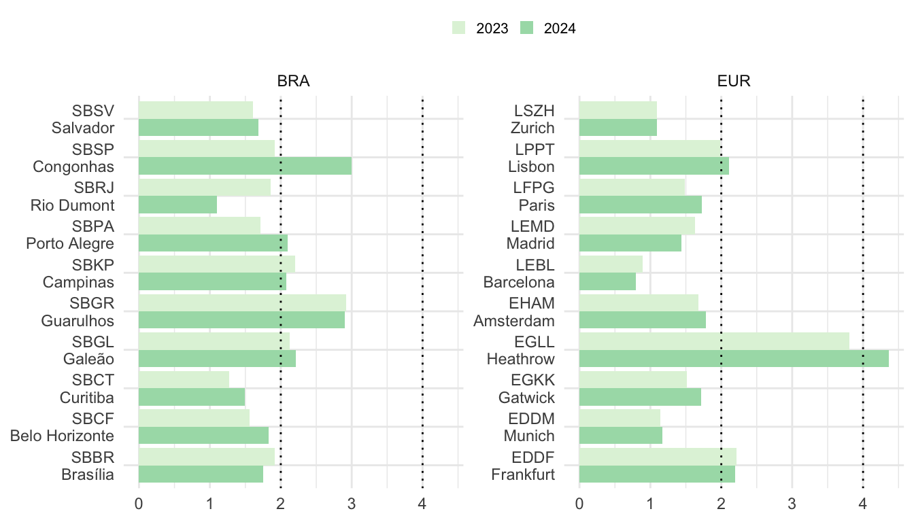
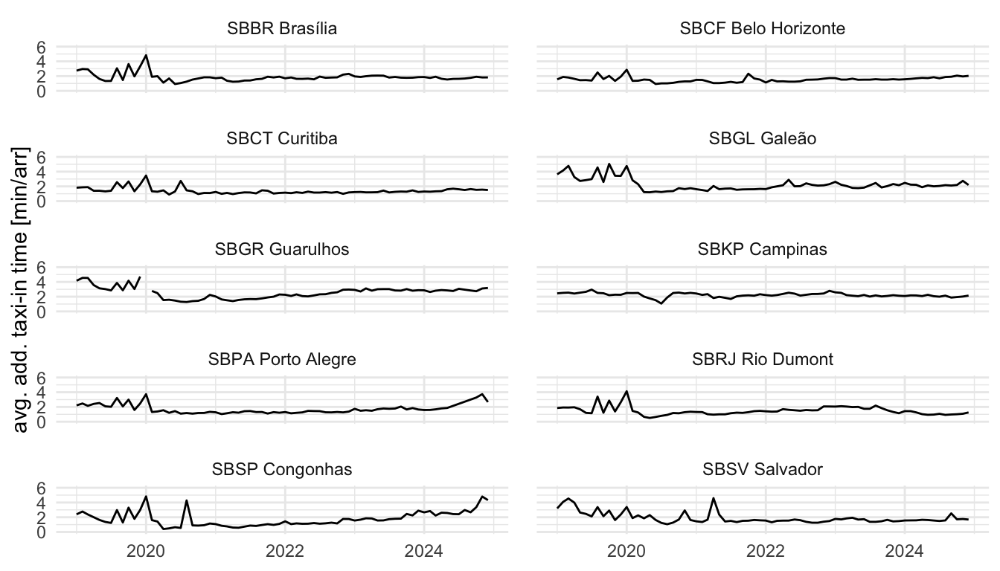
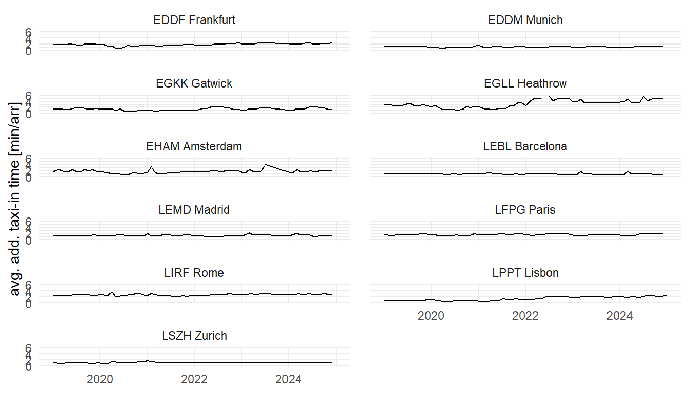
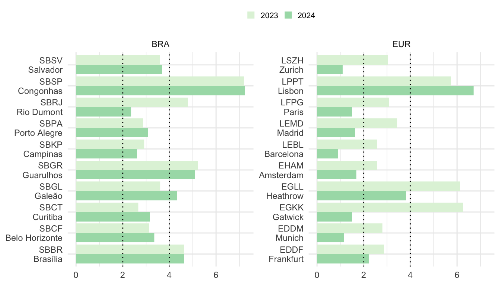
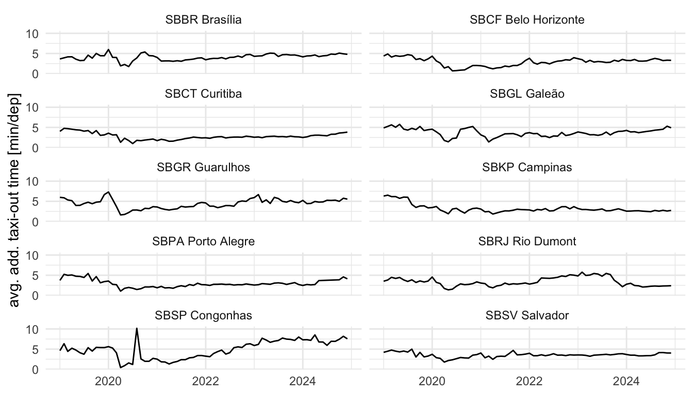
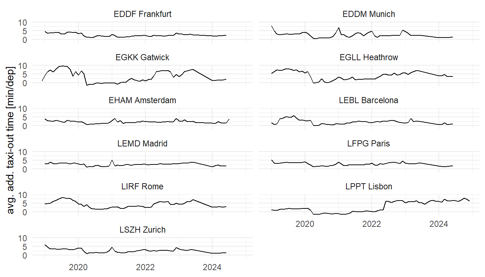
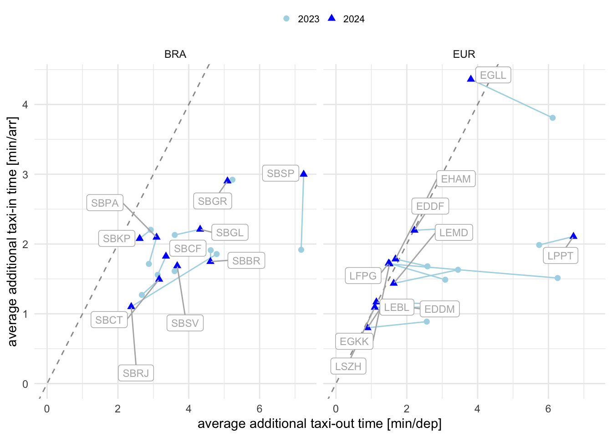
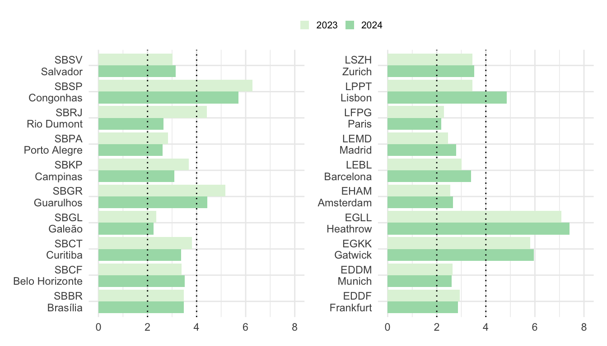
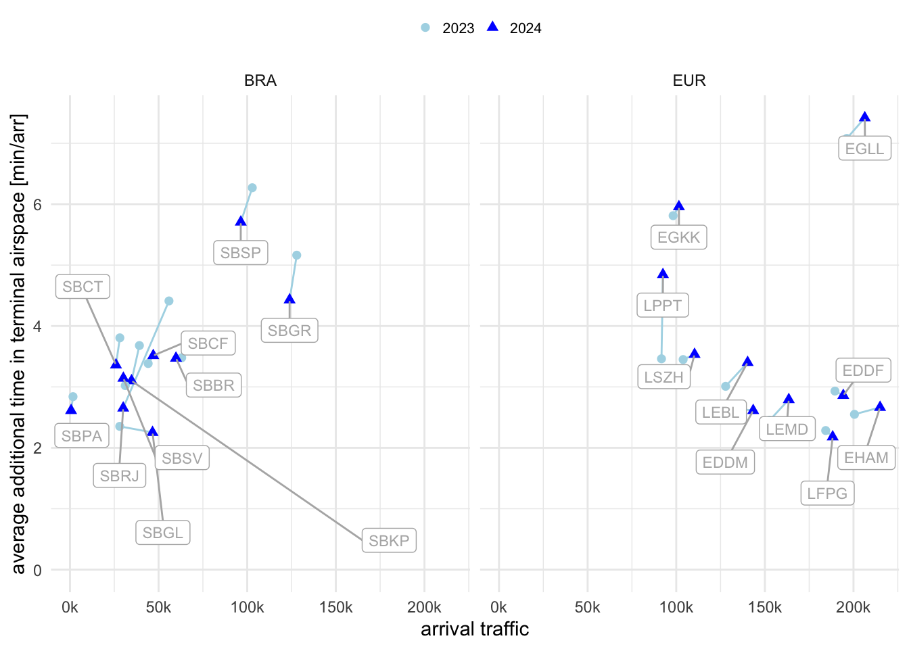

6 Efficiency
Operational efficiency is a critical component in assessing the management and execution of operations. It provides insights in the management of arrival and departure flows and the associated separation and synchronisation activities. Inefficiencies can have an impact on user operations in terms of delays or excessive fuel burn. In light of the previous chapters it is therefore interesting to study how the available capacity was utilised to service demand during the different flight phases.
The measures reported in this comparison report are based on the observed travel time for surface operations (i.e. taxi-in and taxi-out) and during the arrival phase. These travel times are compared with an associated reference time for a group of flights showing similar operational characteristics. The determined difference (i.e. additional time) measures the level of inefficiency. It must be noted that high performance operations will still yield a certain share of measured additional times. Operational efficiency is therefore aiming at minimising rather than eliminating these additional times as they cannot be zero.
6.1 Additional Taxi-In Time
The additional taxi-in time measures the travel time of an arriving aircraft from its touchdown, i.e. the actual landing time, to its stand/gate position, i.e. actual in-block time). This elapsed taxi-in time is compared to an anticipated reference time for aircraft arriving at the same runway and taxiing to the same (group of) stand/gate position(s). Research showed that the taxi-times are not dependent on the type of aircraft. The additional taxi-in time indicator provides a measure of the management of inbound surface traffic.
This report utilises another source for the movement times at Brazilian airports. Next to the actual taxi-times, the new data source provides also gate/stand information. Accordingly, additional taxi-times can be now determined on a per-gate basis. Previous studies did not support this higher level of granularity. The reader needs therefore to bear in mind that the reported results and trends differ from previous reports which were based on an airport-wide aggregation. The latter may be influenced by the predominant runway system configuration and frequently used stand/parking positions.
6.1.1 Annual Evolution of Additional Taxi-in Times
The annual development of the average additional taxi-in times at the study airports is depicted by Figure 6.1.
The 2-minute threshold per arrival continues to serve as a practical reference point for evaluating taxi-in efficiency.
In Brazil, taxi-in performance in 2024 remained generally good, with most airports maintaining values close to or below 2 minutes. Notable exceptions were Congonhas (SBSP), which recorded the highest average additional taxi-in time, reaching approximately 3 minutes per arrival, followed closely by Guarulhos (SBGR), also nearing 3 minutes. Outside these two major hubs, all other studied Brazilian airports displayed taxi-in times well controlled around or below the 2-minute threshold. A particular highlight was Santos Dumont (SBRJ), which achieved a significant reduction in taxi-in times compared to the previous year.
In Europe, the patterns were slightly more varied. London Heathrow (EGLL) remained the airport with the highest additional taxi-in time, approaching 4 minutes per arrival in 2024, underlining persistent surface congestion challenges. Lisbon (LPPT) and Frankfurt (EDDF) also surpassed the 2-minute threshold, though only slightly. All other European airports maintained taxi-in times below 2 minutes. A remarkable highlight was Barcelona (LEBL), where taxi-in efficiency improved notably, with average additional taxi-in times dropping to below 1 minute per arrival.
Compared to 2023, taxi-in times remained relatively stable in both regions, although slight deteriorations were observed at some of the busiest hubs. These results emphasize the continued importance of optimizing surface management procedures to maintain overall predictability, particularly as traffic volumes increase at major airports.
6.1.2 Monthly Variation of Additional Taxi-in Times


The evolution of the taxi-in time at the study airports, shown in Figure 6.2 and Figure 6.3, reinforces the findings presented in the previous analysis. In Brazil, the figures clearly illustrate the increase in average taxi-in times at Porto Alegre (SBPA), Congonhas (SBSP), Salvador (SBSV), and Galeão (SBGL) throughout 2024. Congonhas and Guarulhos consistently maintained the highest levels within the Brazilian group, while Santos Dumont (SBRJ) stands out with a significant improvement, reducing its taxi-in times compared to previous years.
In Europe, the data reveal a relatively stable pattern over the two-year period. Most airports maintained consistent taxi-in times, with minor variations. Lisbon (LPPT) showed a slight upward trend, while Barcelona (LEBL) remained a highlight, sustaining very low taxi-in times, well below 1 minute per arrival.
These trends emphasize the importance of continuous monitoring of ground operations efficiency, especially as traffic demand grows.
6.2 Taxi-Out Times
6.2.1 Annual Evolution of Additional Taxi-out Times

On average, higher additional times for taxi-out are observed across all airports (c.f. Figure 6.4).
In Brazil, Santos Dumont (SBRJ) showed a notable improvement, with a reduction of more than 2 minutes compared to 2023. For the remaining airports, only minor variations were observed, including slight increases at Curitiba (SBCT) and Galeão (SBGL). Congonhas (SBSP) continues to record the highest additional taxi-out times among Brazilian airports, reaching approximately 7 minutes.
In Europe, a significant reduction in taxi-out times was observed across most airports. Zurich (LSZH) particularly stands out, achieving a reduction of about 2 minutes. Lisbon (LPPT) registered the highest taxi-out time among the European airports, nearing 7 minutes. Except for Lisbon, which saw a slight increase, all other European airports improved their taxi-out performance between 2023 and 2024.
6.2.2 Monthly Variation of Additional Taxi-out Times


The trends reinforce the observations from the annual figures.
In Brazil, Santos Dumont (SBRJ) showed a significant improvement in 2024, with taxi-out times decreasing by more than two minutes. For the other airports, monthly variations were relatively small, although a gradual increase can be seen at Curitiba (SBCT) and Galeão (SBGL). Congonhas (SBSP) continues to register the highest additional taxi-out times among Brazilian airports, reaching nearly 7 minutes in 2024.
In Europe, the overall trend is one of improvement, with most airports reducing their taxi-out times between 2023 and 2024. Zurich (LSZH) achieved a notable reduction of about two minutes. Lisbon (LPPT) stands out with the highest taxi-out time, close to 7 minutes. Except for Lisbon, which saw a slight increase, all other European study airports experienced reductions in taxi-out times, confirming a broad regional effort to improve surface efficiency.
6.3 Mapping Additional Taxi-in and Taxi-out Times

This analysis builds on the previous sections. Figure 6.7 compares the relationship between the taxi-in and taxi-out performance observed.
It also shows that on average taxi-out operations accrued more additional time than taxi-in operations (data points range below the dotted unit line, and as shown in the previous sections).
For most of the European airports, the overall performance shows a reduction in additional taxi-out times (i.e. characterised by a leftshift along the x-axis). The noteable exemption is Lisbon (LPPT) that observed an increase in taxi-out time in 2024.
A varied picture of taxi-in performance can be obsered in Brazil across all study airports (i.e. decreasing trend along y-axis). This is contrasted by the behaviour in Europe. The majority of European airports observed no significant change in their taxi-in performance (i.e. no vertical trend). The noteworthy exemption is London Heathrow (EGLL). EGLL faced a significant increase in average additional taxi-in time in 2023 in comparison to the pre-pandemic performance level observed in 2019. The lower performance in terms of taxi-in is observed in Figure 6.3 which shows a strong increase in the second half of 2023. Figure 6.7 also shows that the overall taxi-performance in Europe tends to show lower levels of variation between pre-pandemic and post-pandemic. Exemptions are London Heathrow (EGLL) and Rome Fiumincino (LIRF) that saw a discernible rise in taxi-in inefficiencies and exceeding the levels observed at Brazilian study airports.
6.4 Additional Time in Terminal Airspace
The additional time in terminal airspace is calculated as the difference of the actual flying time from entering the sequencing area (i.e. 100NM radius around the airport) to the actual landing time. Previous research and guidance suggests that reference time can be build for flights sharing similar operational characteristics (entry sector, aircraft class, and landing runway).

Figure 6.8 compares the annual average of additional times in terminal airspace across the study airports. On average, the arrival flows in Brazil appear to be less constraint than in Europe.
For most Brazilian airports, a reduction in additional times in the terminal airspace was observed, which is a positive development. A particular highlight is Santos Dumont (SBRJ), where the average additional time decreased by more than one minute compared to the previous year.
In contrast, European airports generally experienced a slight increase in their additional times in the terminal airspace between 2023 and 2024. This appears to be related to the on-going increase in traffic numbers that put pressure on the arrival management. With observing record years of ATFM delay, flows were generally impacted across the European network in 2023 and 2024. This may have amplified the arrival flow as flows generally were disrupted in light of the constraints.

Figure 6.9 depicts the change in terms of the average additional time in terminal airspace comparing 2023 and 2024.
The comparison shows the effect of the variation of air traffic on the performance in the both region. In general Brazil observed an increase in arrival efficiency evidenced by the lower observed additional times accrued by the arriving traffic. For some airports in the Brazil region it can be observed how procedural aspects influence the additional time in terminal airspace. For example, despite the variation of the traffic levels considered, the additional time remained fairly stable at SBGR comparing pre- and post-pandemic years.
The European region shows saturation effects characterised by the increasing number of flights. On average a shallow increase was observed from 2023 to 2024. This requires attention as future traffic demand will increase the pressure on the constraint arrival management processes.
6.5 Summary
This chapter analysed operational efficiency through the assessment of additional taxi-in and taxi-out times, as well as additional time in terminal airspace. These indicators provide important insights into how air traffic management systems handle surface and arrival flow operations in the face of increasing demand.
The 2-minute threshold remains a useful reference for taxi-in performance. In 2024, Brazilian airports generally maintained good levels of taxi-in efficiency, with most airports close to or below this threshold, except for Congonhas (SBSP) and Guarulhos (SBGR). Santos Dumont (SBRJ) notably improved its taxi-in performance. In Europe, while most airports kept taxi-in times under control, challenges persisted at London Heathrow (EGLL) and Lisbon (LPPT).
Regarding taxi-out times, Brazilian airports showed a mixed trend. While Santos Dumont (SBRJ) registered a remarkable improvement, other airports such as Congonhas (SBSP) continued to experience high taxi-out times. In Europe, most airports achieved reductions in taxi-out times, except Lisbon (LPPT), where a slight increase was observed.
The mapping of taxi-in and taxi-out times confirmed that overall taxi-out inefficiencies remain more significant than taxi-in inefficiencies. Improvements were more pronounced in Brazil for taxi-in operations, whereas Europe showed stability with exceptions like Heathrow (EGLL), which still faced increased inefficiencies.
The analysis of additional time in terminal airspace further indicated that European arrivals at European airports observe a slightly higher additional time. Less constraint European arrival sectors manage their arrivals with slightly less delay compared to Brazilian airports. However, Brazilian airports showed positive trends, with reductions observed at most locations—highlighted again by the strong improvement at Santos Dumont.
These findings underscore the ongoing need for continuous monitoring and improvements in ground and arrival management, especially in the context of increasing air traffic demand.